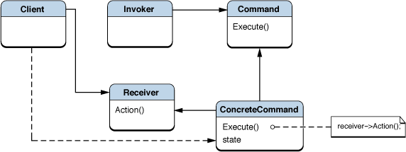

Command Pattern
요청 혹은 작업의 단위를 객체로 캡슐화 한다. Command는 객체가 상태 정보를 저장할 수 있고, 큐잉되거나 로깅될 수 있다는 면에서 C언어의 함수 포인터보다 막강한 기능을 제공한다.
구성
- Command
- 연산 혹은 연산의 집합을 실행하기 위한 인터페이스를 정의한다.
- Concrete Command
- Command interface를 구현하여 연산을 수행한다. 보통 Receiver 객체의 매개자로 기능한다.
- Client
- Concrete Command 객체를 만들고 Receiver를 설정한다.
- Invoker
- Command에 연산을 수행해 달라 요청한다.
- Receiver
- 요청을 어떻게 처리해야 하는지를 알고 있다. 이 기능은 종종 Command 객체 자체에 내장된다.
구조
장단점
- Command는 연산과 연산을 실제로 수행하는 객체 간의 결합도를 줄여준다.
예제
Mediator Pattern
객체들 사이의 복잡한 관계를 캡슐화하는 단일 객체를 정의한다. Mediator는 복잡성을 감춤으로써 코드를 단순화시켜준다. 이는 Mediaor를 사용하는 객체들과 Mediator가 사용하는 객체들 사이의 결합도를 줄여준다.
구성
- Mediator
- Colleage 객체들 간의 통신을 위한 interface 정의
- ConcreteMediator
- Mediator interface를 구현하며 Collegues와 상호 작용하며 이들 사이의 통신을 관리한다.
- College Classes
- Mediator를 통해 양방향으로 통신하는 인터페이스와 클래스들로 이루어진 시스템. 클라이언트가 Collegue임을 주의하기 바란다.
구조

장단점
- 서브시스템들의 결합도를 낮추며, 메시징 시스템과 프로토콜을 단순화해 준다.
- 유지보수를 하면서 복잡성이 증가할 수 있다.
- Mediator가 만능 클래스가 될 수 있다. 한가지 일에만 집중하도록 한다.